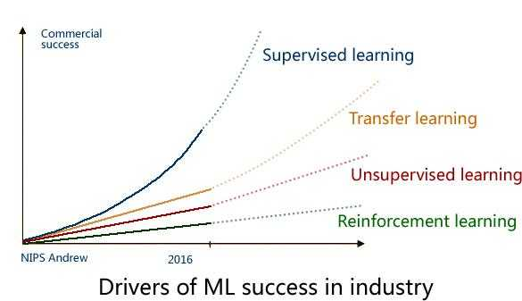
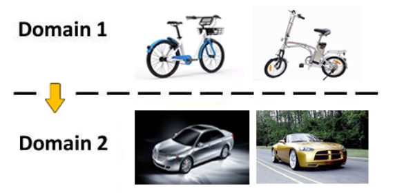
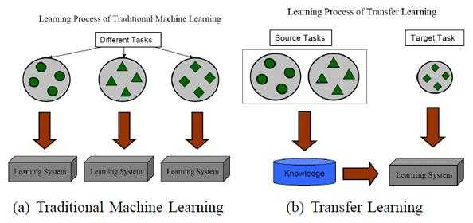

引言
近些年，互联网成为人类日常生活中不可或缺的元素，无处不在。同时，人工智能、大数据、云计算、物联网、区块链等新兴技术也被人们炒的火热，正逐渐融入到我们的日常生活中，其中大数据代表着人类新一代的生产要素，云计算和人工智能作为新一代生产力的典型代表，而物联网和区块链则促进着人类未来生产关系的改变。
我们知道，当前人工智能的算法大多数是基于概率的，会涉及到概率论、统计学等各种数学理论体系。同时我们也知道，人工智能离不开数据，从理论上来说，数据越多，人工智能算法效果越好，会无限趋近于99.999999…….%，但因为是基于概率的，所以永远不可能达到100%，这也是当前人工智能大多只能用来辅助人类决策，而不能代替人类做决策的原因。当然随着科技的进步和人工智能的不断发展，未来也可能真的可以代替人类来做一些决策。
下面将逐一介绍深度学习、迁移学习和强化学习。
深度学习
大数据造就了深度学习，通过大量的数据训练，我们能够轻易的发现数据的规律，从而实现基于监督学习的数据预测。
基于神经网络的深度学习（包括CNN、RNN、DNN），主要解决的领域是图像、文本、语音等，问题聚焦在分类、回归。然而这里并没有提到推理，显然我们用之前的这些深度学习的知识无法造一个AlphaGo出来。

上面这张图是在2016年的 NIPS 会议上，吴恩达 给出了一个未来 AI方向的技术发展图，还是很客观的。
毋庸置疑，监督学习是目前成熟度最高的，可以说已经成功商用，而下一个商用的技术 将会是迁移学习（Transfer Learning），这也是Andrew预测未来五年最有可能走向商用的 AI技术。
迁移学习
迁移学习也可看作是举一反三，它本质上是用相关的、类似的数据来做训练，然后通过迁移学习来实现该模型本身的泛化能力，它所要解决的问题是如何将学习到的知识从一个场景迁移到另一个场景。
就拿图像识别来说，迁移学习是指从识别自行车到识别汽车，从识别中国人到 识别外国人……

下面再借用一张示意图（图片来源：A Survey on Transfer Learning）来进行说明：

实际上，你可能在不知不觉中使用到了迁移学习，比如所用到的预训练模型，在此基础所做的Fine-Turning，再比如你做目标跟踪Tracking所用的online learning。
迁移学习的价值体现在：
1、一些场景的数据根本无法采集，这时迁移学习就很有价值；
2、复用现有知识域数据，已有的大量工作不至于完全丢弃；
3、不需要再去花费巨大代价去重新采集和标定庞大的新数据集；
4、对于快速出现的新领域，能够快速迁移和应用，体现时效性优势；
关于迁移学习算法的实践总结：
1、通过原有数据和少量新领域数据混淆训练；
2、将原训练模型进行分割，保留基础模型（数据）部分作为新领域的迁移基础；
3、通过三维仿真来得到新的场景图像（OpenAI的Universe平台借助赛车游戏来训练）；
4、借助对抗网络 GAN 进行迁移学习 的方法；
强化学习
强化学习的全称是 Deep Reinforcement Learning（DRL），其所带来的推理能力，是智能的一个关键特征衡量，真正的让机器有了自我学习、自我思考的能力。目前强化学习主要用在游戏 AI 领域，最出名的案例应该是AlphaGo的围棋大战。
实际上，强化学习是一种探索式的学习方法，通过不断地 “试错” 来得到改进，不同于监督学习的地方是，强化学习本身没有Label，每一步的 Action 之后它无法得到明确的反馈（在这一点上，监督学习每一步都能进行Label 比对，得到 True or False）。
强化学习中由环境提供的强化信号是Agent对所产生动作的好坏作一种评价（通常为标量信号），而不是告诉 Agent 如何去产生正确的动作。由于外部环境提供了很少的信息，Agent 必须靠自身的经历进行学习。通过这种方式，Agent在行动逐一评价的环境中不断获得知识，改进行动方案以适应环境。
基本原理：
首先Agent选择一个动作用于环境，环境接受该动作后状态发生变化，同时产生一个强化信号(奖或惩)反馈给Agent，Agent根据强化信号和环境当前状态再选择下一个动作，选择的原则是使受到正强化(奖)的概率增大。如果Agent的某个行为策略导致环境正的奖赏(强化信号)，那么Agent以后产生这个行为策略的趋势便会加强。
Agent学习的目标是通过动态地调整参数，以达到强化信号最大，也就是在每个离散状态发现最优策略以使期望的折扣奖赏和最大。
强化学习是通过以下几个元素来进行组合描述的：
对象（Agent）
也就是我们的智能主题，比如 AlphaGo。
环境（Environment）
Agent 所处的场景－比如下围棋的棋盘，以及其所对应的状态（State）－比如当前所对应的棋局。
Agent 需要从 Environment 感知来获取反馈（当前局势对我是否更有利）。
动作 (Actions)
在每个State下，可以采取什么行动，针对每一个 Action 分析其影响。
奖励 (Rewards)
执行 Action 之后，得到的奖励或惩罚，Reward 是通过对环境的观察得到。
通过强化学习，我们得到的输出就是：Next Action，也就是下一步该怎么走，这其实就是 AlphaGo 的棋局。